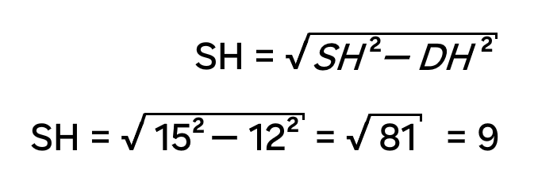

Задача-исследование
Задача: Дана четырехугольная пирамида SABCD в основании которой равнобедренная трапеция ABCD (AB = CD), ∠BAD = 60˚. Плоскости SAB и SCD перпендикулярны плоскости трапеции ABCD, AD = 12, SA = 15. Найти расстояние от точки S до плоскости трапеции.
План исследования:
1. Гипотеза
2. Математическое обоснование
3. Построение 3D-модели
4. Решение
5. Вывод
1. Гипотеза
Высота SH треугольника BSC есть расстояние от точки S до плоскости трапеции ABCD, где точка H лежит на BC
2. Математическое обоснование

Расстояние от точки S до плоскости трапеции- это длина перпендикуляра, опущенного из точки S на плоскость трапеции. Определим местоположение основания перпендикуляра.
Плоскости ABS и DCS имеют одну общую точку S, тогда по аксиоме, эти плоскости имеют общую прямую. Найдем вторую точку.
Плоскости ABS и DCS пересекаются с плоскостью трапеции по прямым АВ и DC.
Т.к. АВDС-это трапеция, то АВ и DC не параллельны. Н- это точка пересечения продолжения АВ и DC и тогда SН- общая прямая данных плоскостей.
По теореме: Если каждая из двух пересекающихся плоскостей перпендикулярна третьей плоскости, то их линия пересечение также перпендикулярна этой плоскости ., получаем, что Н S и есть перпендикуляр к плоскости, а следовательно расстояние от точки S до плоскости трапеции.
Точка Н не может лежать на ВС. Наше предположение неверно.
3. 3D-модель
4. Решение
1. Т.к. трапеция АВСD равнобедренная и ∠А при основании равен 60˚, то ∠D = 60˚. Тогда по тереме о сумме углов треугольника ∠Н = 60˚. Это означает, что ΔADH равносторонний, тогда AD = АН = DН = 12

5. Вывод
Наша гипотеза не подтвердилась. Основание высоты SH лежит вне плоскости трапеции и искомое расстояние равно 9.